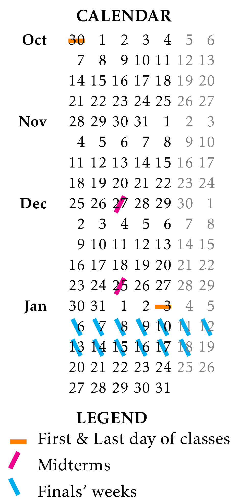

For a formal answer to this question, see
and
More informally, Phys209 introduces the differential equations and expands on how one can approach (and, if possible, solve) these objects whereas Phys210 introduces the vector calculus and the complex analysis. We are interested in these objects because most of the known physics is expressed in terms of differential equations whose solutions are organized using the language of vectors and complex numbers.
This is a must course for any undergraduate student in the department of Physics (see the curriculum) and the department of Physics Education (see the curriculum). Assuming that you have taken a sufficient set of prerequisite courses (see Phys209 and Phys210), you should take these courses too.
I am teaching Phys209 in this semester (20241) and the classes are as follows:
| Monday | 10:40-12:30 | — P3 |
| Friday | 13:40-15:30 | — P3 |
See here for the location of classrooms!
The overall score for the course is calculated with the following formula:
For self-study, you may check out the previous examinations and previous homeworks:
__________________________________________________________________________
Phys209
__________________________________________________________________________________
(1) Definition and Classification of Differential Equations: ordinary vs partial, linear vs non-linear, homogeneous vs non-homogeneous, order vs order vs order vs
(2) Linear equations with constant coefficients: Their relevance in physics and engineering, principle of superposition, characteristic equation, repeated roots, formal solution for both homogeneous and nonhomogeneous cases, initial and boundary value problems, the impulse response, the Laplace transform, convolution
(3) Linear equations with functional coefficients:
(4) Systems of first order linear differential equations: Conversion of arbitrary linear ordinary differential equations to systems of first order linear differential equations, analysis of coupled systems via matrix differential equations, phase space, formal solutions (Volterra integral equation, Dyson series)
(5) Eigensystems and Sturm-Liouville theory: Matrix diagonalization, normal modes, eigenvalues and eigenfunctions, Sturm-Liouville type differential equations and their solutions
(6) Beyond linear ordinary differential equations:
__________________________________________
Phys210
__________________________________________________________________________________
(1) Definition and Fundamentals of Vector Spaces: basics of linear algebra and linear spaces, norms and inner product spaces, algebras over fields (tensor, exterior, alternating, and division algebras).
(2) Differentiation in Vector calculus: vector fields in Euclidean spaces, bivectors & covectors & forms, metric tensor, invariant formulation of differentiation in vectors (grad, div, curl, Laplacian), Helmholtz decomposition of vector fields
(3) Integration in Vector calculus: curves and line integrals, Frenet–Serret formulas, integral theorems (gradient theorem, divergence theorem, curl theorem, and Green’s theorem)
(4) Curvilinear Coordinate Transformations: coordinate charts, common orthogonal curvilinear coordinates (polar, cylindrical, spherical)
(5) Basics of Complex Calculus: analysis of complex numbers as a two dimensional real vector space (complex plane, geometric interpretations, polar form), algebraic properties of complex numbers, complex differentiation
(6) Complex Analysis: Riemann sphere, common Riemann surfaces, analyticity of complex functions, series expansions, analytic continuation and monodromy theorem
